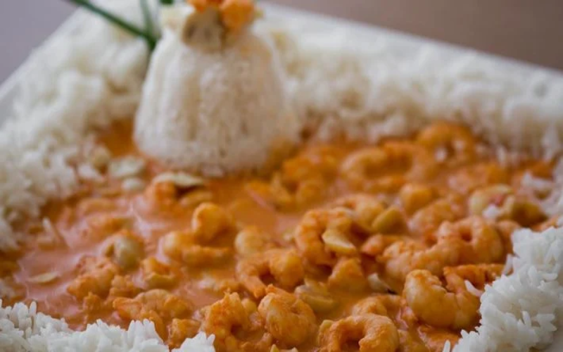

Strogonoff de Camarão

O strogonoff de camarão é uma receita simples, de fácil preparo e bastante econômica. É uma opção para o almoço ou jantar em família no fim de semana. Você pode servir o prato também no almoço de Sexta-Feira Santa, no almoço de Páscoa e na ceia de Natal e Ano-Novo acompanhado de arroz branco e batata palha.
Para fazer a receita de strogonoff de camarão, você vai precisar de camarão cinza ou rosa, creme de leite, molho de tomate, mostarda, margarina e temperos. Confira o passo a passo completo e prepare em casa!
Ingredientes
-
500 gramas de camarão cinza ou rosa
-
1 colher de sobremesa rasa de margarina
-
1 cebola picada
-
2 dentes de alho picado
-
1 pitada orégano
-
1 pitada de sal
-
Pimenta-do-reino a gosto
-
1 xícara de molho de tomate
-
1 colher de sopa de mostarda
-
1 lata de creme de leite sem soro
Modo de preparo
- Retire a cabeça e as cascas do camarão, limpe e reserve.
- Em uma panela, coloque 1 colher de sobremesa de manteiga e deixe derreter.
- Depois, coloque os camarões e adicione 1 pitada de orégano, 1 pitada de sal e pimenta-do-reino a gosto. Misture.
- Acrescente 1 xícara de molho de tomate, 1 colher de sopa de mostarda e misture novamente.
- Desligue o fogo, adicione 1 lata de creme de leite sem soro e misture.
- Sirva em seguida.